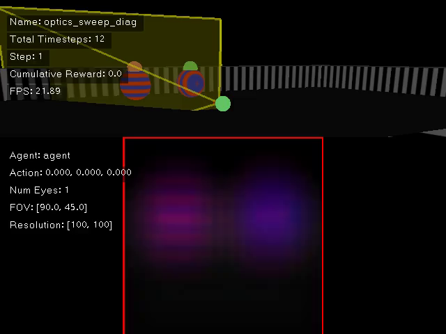
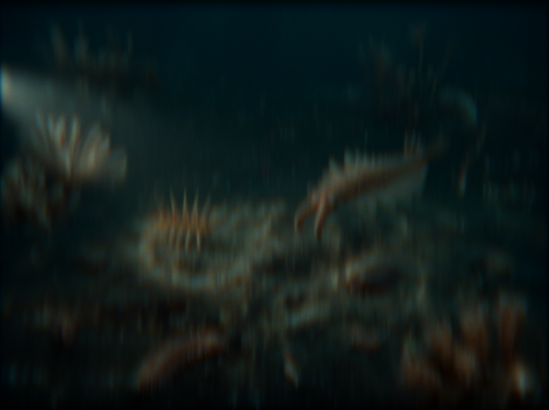

Shapes of Cambria: The Cambrian Explosion in Silico
The friction of survival; the ecology of emergent sight.
Statement
Shapes of Cambria: The Cambrian Explosion in Silico
What happens when the evolution of vision becomes a computational medium rather than a biological event? The Light Switch Hypothesis proposes that the sudden emergence of vision triggered the Cambrian Explosion, sparking a rapid co-evolution of life forms. The interactive generative artwork Shapes of Cambria: The Cambrian Explosion in Silico translates this biological milestone into a digital, agent-based ecosystem.
Inspired by a Science Advances study that computationally recreates vision evolution by optimizing the eyes and behaviors of embodied agents, this artwork takes a divergent path. While the scientific framework relies on approximated 2D convolution models optimized strictly for survival tasks and image sharpness, this project integrates a fully differentiable polynomial optics (ray-tracing) renderer. It explores the differentiability of the lens itself, treating the internal mechanics of the optical system—curvatures, refractive indices, and sensor distances—as highly mutable digital phenotypes.
To navigate this vast evolutionary manifold, the artwork employs a dual-path architecture. A highly efficient, low-level rendering pipeline drives the rapid evolutionary search, while a computationally intensive, cinematic-quality path runs in parallel to visualize the intricate phenomena of physical light transport. Furthermore, the simulation captures intra-generational adaptability; individual optical species are not static but can dynamically modulate their field of view (FOV) and aperture within a single generation, mirroring the phenotypic plasticity found in nature.
Crucially, the evolutionary gradient here is not driven by a blind algorithmic pursuit of traditional “imaging quality” or mathematical perfection. Instead, it relies on human-in-the-loop intervention. Participants act as the environmental pressure, manually selecting and breeding specific optical mutations. This intentional curation embraces the beautiful glitches of physical optics—cascading chromatic bleeding, warped diffractions, and organic aberrations. By reclaiming these artifacts as essential textures of visual storytelling rather than noise to be suppressed, the artwork transforms deterministic optimization into a fluid medium for human intentionality.
When a digital organism evolves to see, should it inherit the cold certainty of math, or can it be steered to embrace the beautiful failures of physical reality?
Art Paper
A four-page technical and critical inquiry that dissects the differentiable optical metabolism of Cambria, documenting the artistic choices, technical infrastructure, and critical perspectives behind its emergent sight.
Abstract
In the burgeoning field of “differentiable visual computing,” the once-static components of the imaging pipeline—lenses, sensors, and light transport—are reimagined as differentiable parameters, allowing for end-to-end optimization through gradient descent. However, this paradigm often sacrifices artistic agency for the sake of sterile mathematical convergence. Shapes of Cambria: The Cambrian Explosion in Silico is an interactive generative ecosystem that reclaims this agency, transforming the biological “Light Switch” theory into a computational manifold.
By parameterizing a fully differentiable polynomial optics framework as a mutable “optical genome,” the work simulates a digital Cambrian Explosion where vision is not a fixed utility, but an evolving medium. While modern AI models chase the cold certainty of image sharpness, our system positions the artist and participants as the primary environmental pressure. This steers the evolutionary agents toward the intentional cultivation of “expressive artifacts”—chromatic bleeding, optical warping, and organic aberrations. Through this human-in-the-loop intervention, Shapes of Cambria demonstrates that the synergy between differentiable mechanics and curated mutation can yield a more poetic rendering of reality than deterministic optimization alone, effectively making imperfection intrinsic to the heart of the digital eye.
Preview the art paper (PDF) inline
Video


Gallery


Acknowledgment
We gratefully acknowledge What if eye...? Computationally recreating vision evolution by Tiwary et al. (Science Advances, 2025), whose computational study of the coevolution of eyes and behavior in embodied agents helped shape the conceptual foundation of this project. Shapes of Cambria algorithmically extends that trajectory through critical artistic perspectives, reconfiguring vision evolution as a more feedback-responsive simulation shaped by human intervention.
Future iterations will continue to evolve. The project is intended to unfold as an interactive and video-based installation, with ongoing development toward a real-time interactive environment in Unity, expanding toward more explicit evolutionary lineages, real-time interaction, and multi-participant environments. In doing so, it aims to reopen the relationship between the artist and evolutionary mechanisms as both an analogy for and a material metaphor of differentiable visual computing and AI, while remaining open to the translational mutations and perceptual artifacts that emerge as the system adapts to new computational settings.
BibTeX
@misc{lee2026shapescambria,
title = {Shapes of Cambria: The Cambrian Explosion in Silico},
author = {Lee, Jinwoo},
year = {2026},
howpublished = {CVPR Art Gallery 2026 submission},
note = {Project page: https://cinescope-wkr.github.io/shapes-of-cambria/}
}